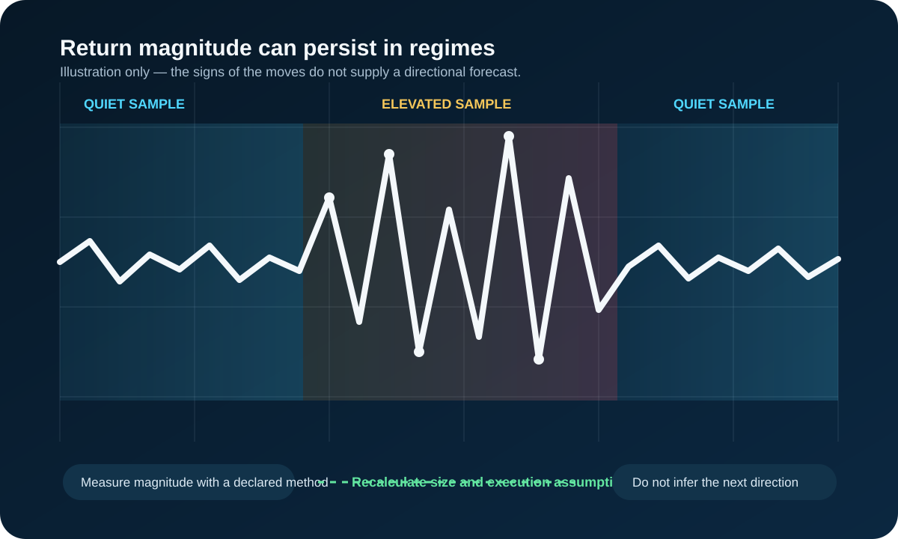

Volatility Clustering: What It Means and How to Measure It
Updated September 19, 2026
Volatility clustering is the tendency for large price changes to occur near other large changes and for quieter changes to occur near other quiet changes. It describes persistence in the size of returns, not a forecast of whether the next return will be positive or negative.
The practical point is conditional risk: after a large move, recent variability may remain elevated even when direction changes. That can alter stop execution, slippage, and the dollar risk of a fixed contract count.

What clustering does and does not say
| Observation | Supported interpretation | Unsupported shortcut |
|---|---|---|
| Large absolute returns occur close together | Recent variability is persistent in the selected sample | The next bar must continue in the same direction |
| A range or volatility measure is rising | Price has recently moved farther under that declared measure | A breakout or reversal is guaranteed |
| A quiet period persists | Recent realized variability is low | A violent move is due on a known schedule |
How to examine it consistently
- Choose one instrument, contract, session, timezone, and bar interval.
- Use a declared return or range measure and a fixed lookback.
- Compare like-for-like sessions; do not silently mix overnight and regular-hours samples.
- Separate direction from magnitude by examining absolute or squared returns when the question is variability.
- Record spreads, depth, and fills separately because volatility and execution quality are related but not identical.
Why absolute and squared returns are useful
A signed return answers a direction question: was the move positive or negative? Clustering is usually a magnitude question, so analysts often examine the absolute value of a return or its square. A +1% and a −1% return are opposite directions but the same size for that purpose. Squaring gives large moves extra weight; absolute returns are often easier to explain. Neither transformation turns the series into a price forecast.
For a simple observation routine, calculate a consistent bar-to-bar return, then compare a short rolling average of its absolute value with a longer baseline. If the short measure is persistently above the baseline, that is evidence of elevated recent variability in that sample. State the interval, session, lookback, and whether the figures include overnight trading. Changing those choices can change the result.
Worked measurement example
Suppose a trader reviews one-minute returns during one defined session. During a quiet sample, most absolute moves might be one or two ticks. In a later sample, several moves may be six to ten ticks and arrive close together. That observation supports the narrow conclusion that recent one-minute variability is higher. It does not establish that buyers or sellers caused the change, that a reversal is due, or that the larger moves will continue for a known number of bars.
The same comparison can be made with an average true range or another declared range measure, but it should not be silently mixed with a return calculation. Range, realized volatility, and implied volatility answer related but distinct questions. Cboe's VIX materials describe an options-implied measure; it should not be described as a direct substitute for realized variability in a chosen futures session.
A step-by-step sizing example
Assume an illustrative futures contract has a tick value of $5. A trader has identified an invalidation point 12 ticks away, so the distance component of one contract's risk is 12 × $5, or $60. If the trader also allows $10 for estimated slippage and commissions, the planning figure is $70 per contract. In a later elevated-volatility sample, the same market structure may require a 24-tick invalidation distance. At the same one-contract quantity, the planning figure becomes $130 before any change in the actual fill quality.
The lesson is arithmetic, not a stop-placement recommendation. The trader could reduce quantity, use a different setup, wait for conditions to normalize, or decide that no position fits the pre-set loss limit. Simply keeping quantity unchanged and calling the wider stop “risk management” does not keep dollar exposure unchanged. Conversely, reducing quantity does not solve a plan if the market is moving too quickly to make the intended execution assumption credible.
What to observe in practice
Look for a sequence rather than a single large candle: recurring wider bars, more frequent gaps between quoted prices, larger realized ranges over the declared interval, and a change in actual fill quality. Compare the same session and contract month where possible. A five-minute chart can make a series look calm even when one-minute execution is unstable; a daily range can hide a difficult opening interval.
Keep a small record of the measure, the session, planned distance, planned quantity, and realized slippage. After several observations, that record can show whether the planning assumptions stayed appropriate. It cannot prove a universal “volatility regime” or predict a particular next move, but it can improve discipline around assumptions that otherwise stay implicit.
Why clustering can occur
Information may arrive in stages, market participants may update positions at different speeds, and liquidity or risk limits may adjust after a shock. These are plausible mechanisms, not identities that can be proven from candles alone. A chart does not reveal which participant initiated a move.
Regimes, GARCH-style thinking, and limits
At a conceptual level, GARCH-style models formalize a familiar idea: recent large errors and prior estimated variance can raise a model's next variance estimate. That is a model of conditional variance, not a rule that markets stay volatile forever or a signal to trade in one direction. A useful plain-language version is to treat current conditions as a regime estimate that can be revised when the data changes.
Regimes can break abruptly. A scheduled release, a holiday session, an illiquid contract month, a data outage, or a different bar interval can make a recent lookback unrepresentative. Volatility can also fall while execution remains difficult, or rise while a liquid market still absorbs modest size efficiently. A single indicator should therefore not replace contract-specific spread, depth, and risk checks.
Risk use, not a directional signal
If the market-based invalidation distance doubles while contract quantity stays fixed, the stop-distance component of dollar risk roughly doubles. A trader can respond by recalculating size, accepting a smaller position, or not trading. This is illustrative arithmetic, not a rule to widen every stop after a large bar.
Practical risk workflow
- Define the session and current instrument before comparing a volatility measure.
- Write down the invalidation distance and the contract's current tick value.
- Estimate dollar risk at the intended quantity, including a realistic allowance for slippage and fees.
- Reduce quantity, postpone the trade, or accept no trade if the planned loss no longer fits the risk limit.
- Review the measure after the session rather than treating a single high-volatility reading as a permanent rule.
A common mistake is to widen a stop automatically because bars are larger. That may merely increase dollars at risk. Another is to reduce size mechanically without checking whether the smaller quantity can be traded efficiently in the selected market. The decision belongs to the complete plan, not to a volatility label alone.
Also avoid using a volatility reading as permission to ignore a scheduled event, a thin session, or a change in contract liquidity. Volatility is one input to risk planning. It does not establish the quality of an entry, the reliability of a signal, a trader's suitability for risk, or a guaranteed maximum loss.
For the drivers behind changing variability, see what drives market volatility.
Sources, scope, and change risk
Reviewed September 19, 2026 against the following first-party or regulatory sources:
Volatility measures depend on the instrument, data, session, interval, and lookback. Implied and realized volatility are different concepts. Recalculate from current data and verify contract mechanics before changing risk.